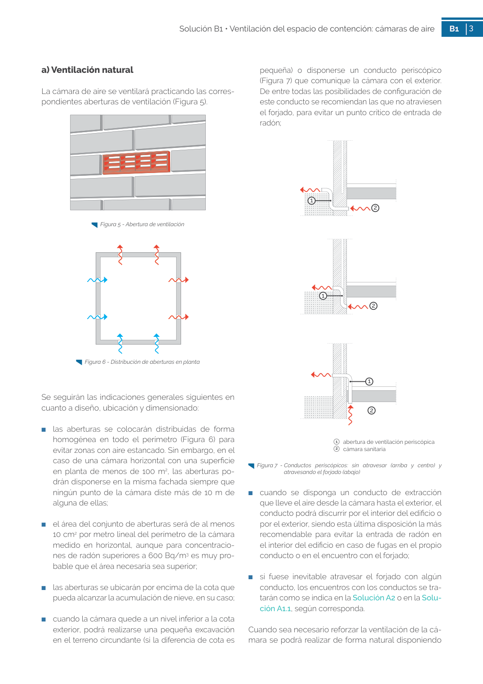

GUIA · a) Ventilación natural · versión sin-fecha · capa guia
Formatos: JSON compacto · Markdown · PDF fuente
Ámbito del documento · texto del ámbito · documento y tablas
Tipo: tablas, figuras · nivel 3 · sección estimada: 1 cámara bufa · padre: a0010
a) Ventilación natural La cámara de aire se ventilará practicando las corres pondientes aberturas de ventilación (Figura 5). Figura 5 - Abertura de ventilación Figura 6 - Distribución de aberturas en planta Se seguirán las indicaciones generales siguientes en cuanto a diseño, ubicación y dimensionado: ■ las aberturas se colocarán distribuidas de forma homogénea en todo el perímetro (Figura 6) para evitar zonas con aire estancado. Sin embargo, en el caso de una cámara horizontal con una superficie en planta de menos de 100 m2, las aberturas po drán disponerse en la misma fachada siempre que ningún punto de la cámara diste más de 10 m de alguna de ellas; ■ el área del conjunto de aberturas será de al menos 10 cm2 por metro lineal del perímetro de la cámara medido en horizontal, aunque para concentracio nes de radón superiores a 600 Bq/m3 es muy pro bable que el área necesaria sea superior; ■ las aberturas se ubicarán por encima de la cota que pueda alcanzar la acumulación de nieve, en su caso; ■ cuando la cámara quede a un nivel inferior a la cota exterior, podrá realizarse una pequeña excavación en el terreno circundante (si la diferencia de cota es pequeña) o disponerse un conducto periscópico (Figura 7) que comunique la cámara con el exterior. De entre todas las posibilidades de configuración de este conducto se recomiendan las que no atraviesen el forjado, para evitar un punto crítico de entrada de radón;

PDF fuente redistribuible: copia fiel enlazada en esta página (SHA256 verificado).